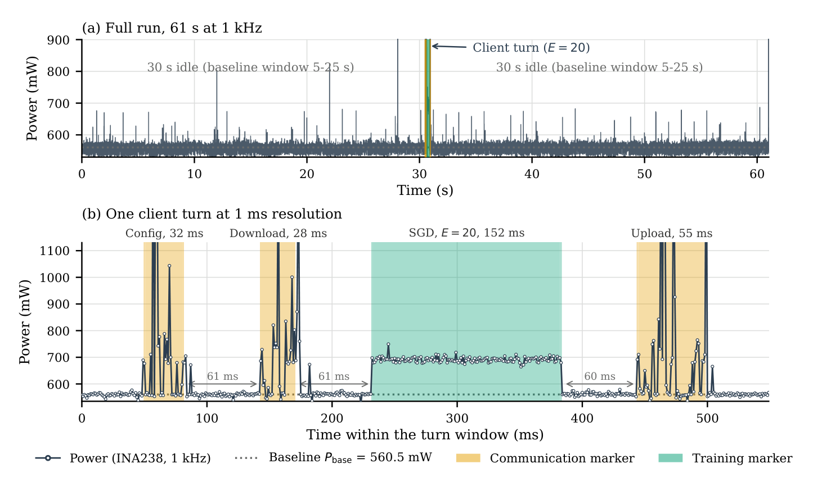
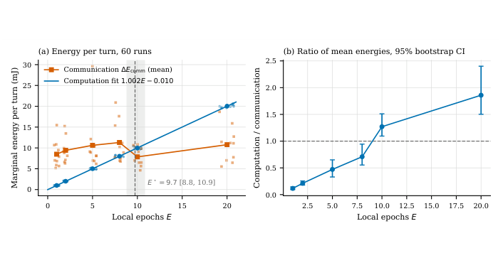
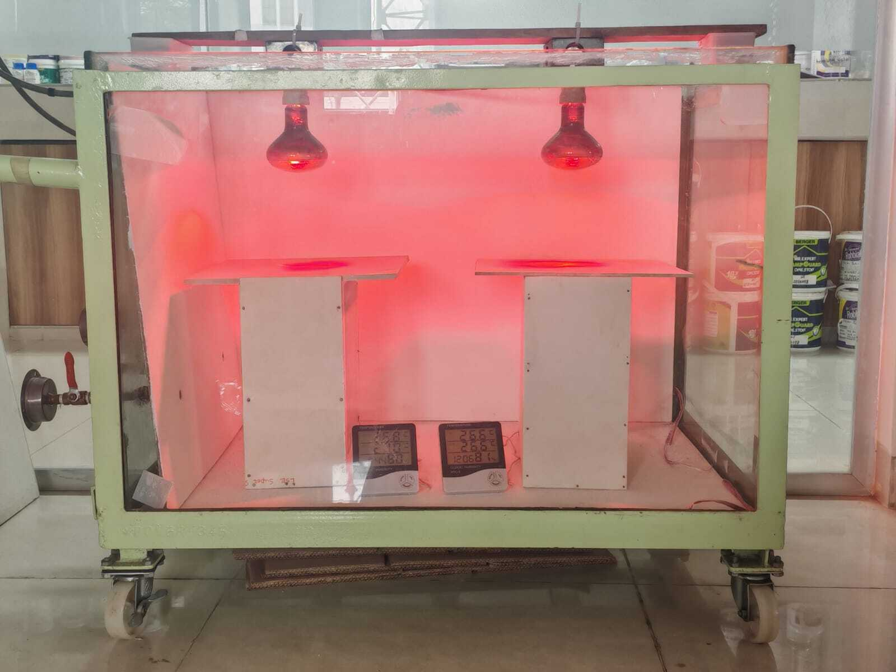

1.00 mJ / epochOn-Device Training Cost (152 ms for E=20, zero constant overhead)
9.7 mJ / turnWi-Fi 2.4 GHz Exchange (3,120-byte model updates)
95%–99% ErrorShannon & Switching Models Underestimate Energy
[FL1]First Instrumented Crossover Measurement: Conducted the first physically instrumented measurement of the computation–communication energy crossover for Federated Learning over Wi-Fi on an ESP32-S3 microcontroller, sampled at 1 kHz with an external INA238 power monitor and GPIO hardware attribution markers across 60 randomized runs (E ∈ {1, 2, 5, 8, 10, 20}).
[FL2]Radio Tail Energy Characterization: Isolated the post-communication Wi-Fi radio tail in a 45-run experiment, demonstrating that on-device training initiated immediately after a radio burst absorbs ∼0.5 mJ of decaying RF tail energy, which a 60 ms inter-burst pause cleanly eliminates.
[FL3]Closed-Form Crossover with Sleep & Contention: Derived a closed-form analytical crossover model incorporating standby/sleep power and channel contention; proved that sleeping between rounds shifts the crossover point monotonically toward the ratio of exchange time to epoch time (11 to 19 epochs under typical sleep powers).
[FL4]Analytical Model Failure Breakdown: Evaluated five prevalent analytical wireless FL models (including Shannon-capacity transmission and dynamic switching energy models), demonstrating they underestimate physical energy dissipation by 95% to 99% due to neglecting baseline quiescent awake power.
[FL5]Measurement-Calibrated Tuning Procedure: Formulated a practical, measurement-calibrated algorithm to guide local epoch selection (E), decoupling the hardware energy crossover E☆ from learning convergence Eopt.

Figure 1: Measured 1 kHz power trace of client turn (E = 20) showing training burst, download, pause, and upload.

Figure 2: Marginal energy per client turn vs. local epochs E establishing the crossover at E* ≈ 9.7.
Read Full Abstract
Wireless federated learning (FL) is usually designed on the assumption that radio transmission costs far more energy than on-device computation. We test this assumption on a microcontroller. An ESP32-S3 trains the last layer of a frozen keyword-spotting network and exchanges 3,120-byte updates over 2.4 GHz Wi-Fi, while an independent INA238 monitor samples its supply at 1 kHz and GPIO markers separate computation from communication. To our knowledge, this is the first instrumented measurement of the computation–communication energy crossover for FL over Wi-Fi. In a 60-run campaign over E ∈ {1, 2, 5, 8, 10, 20} local epochs, computation costs 1.00 mJ per epoch with no detectable constant term, and communication costs 9.7 mJ per client turn with no trend in E, so the two are equal at E* ≈ 9.7. A second session gives 7.4 mJ and E* ≈ 7.4, so the crossover depends on radio conditions. A 45-run test shows that training started immediately after a radio burst absorbs about 0.5 mJ of radio tail energy, which a 60 ms pause removes. Shannon-capacity and switching-energy models underestimate the energies by 95% to 99%, and a datasheet-current model is within about 10% only at its nominal point. We prove that sleeping between rounds moves the crossover toward the ratio of exchange time to epoch time; with assumed sleep powers this gives 11 to 19 epochs. We give a measurement-calibrated procedure for choosing E and design guidelines, and we state which quantities are measured and which are assumed.
@article{siam2026energyfl,
title={Energy Allocation Between Computation and Wi-Fi Transmission in TinyML Federated Learning: A Measured Crossover},
author={Siam, Md. Abdus Shakur and Azzedin, Farag},
journal={IEEE Transactions on Machine Learning in Communications and Networking (Under Review)},
year={2026}
}
NSysS 2026 (Cox’s Bazar, Bangladesh)Under Review
Quantization as a Deployability Gate for Keyword Spotting on a Cortex-M4 MCU
Md. Abdus Shakur Siam
1 of 4 DeploysFull-Integer INT8 Solo Survivor (Binary Deployability Gate)
92.25% AccMatches 92.18% FP32 Ceiling (+0.07% vs FP32 baseline)
4.39 ± 0.02 mJMeasured Energy per Inference @ 180 MHz (158.72 ms latency)
[Q1]Controlled Four-Way PTQ Benchmark: Conducted a controlled, single-pipeline comparison of four standard TensorFlow Lite post-training quantization variants (FP32, float16, dynamic-range INT8, full-integer INT8) for a DS-CNN-S keyword spotting model on Google Speech Commands v2 deployed to a physical STM32 Nucleo-F446RE (Cortex-M4, 180 MHz, 128 KiB SRAM).
[Q2]The Binary Deployability Gate Discovery: Uncovered that post-training quantization functions on tight-SRAM microcontrollers not as a continuous accuracy/efficiency dial, but as a hard binary deployability gate: FP32 (256.70 KiB) and dynamic-range INT8 (194.46 KiB) breach SRAM capacity, while float16 is rejected by toolchain tensor support, eliminating 3 of 4 schemes before deployment.
[Q3]Negligible Quantization Accuracy Cost: Demonstrated that full-integer INT8 reaches 92.25% test accuracy—essentially matching the 92.18% FP32 reference (a difference of just 0.07 percentage points within a sub-0.4-point spread across all variants)—while reducing flash footprint by 44% (to 62.26 KiB).
[Q4]Joint Physical Hardware Profiling: Reported a fully measured (not simulated) trade-off evaluation spanning accuracy, flash, RAM, latency (158.72 ms), and INA238-instrumented energy consumption (4.39 ± 0.02 mJ) on a physical Cortex-M4 core at maximum 180 MHz clock.
Figure 2: SRAM required by each PTQ variant vs. 128 KiB MCU limit: only Full-INT8 survives the deployability gate.
Read Full Abstract
Deploying keyword spotting (KWS) on Cortex-M4 microcontrollers requires post-training quantization (PTQ). In practice, however, embedded engineers often discover toolchain incompatibilities and memory overruns only after attempting on-device deployment—long after model selection is complete. This gap matters directly for low-power, edge-intelligence system design. We present a controlled, physically measured comparison of four TensorFlow Lite PTQ variants: FP32, float16, dynamic-range INT8, and full-integer INT8. We apply them to a DS-CNN-S keyword-spotting model trained on Google Speech Commands v2, and deploy each variant to an STM32 Nucleo-F446RE (Cortex-M4, 180 MHz, 128 KiB SRAM) using STM32CubeIDE and X-CUBE-AI. Static analysis shows that FP32 (256.70 KiB RAM) and dynamic-range INT8 (194.46 KiB RAM) both exceed the board’s SRAM budget. Float16 is unsupported by the toolchain for this target family. This leaves full-integer INT8 as the only deployable variant. It reaches 92.25% test accuracy, essentially matching the 92.18% FP32 reference (a difference of just 0.07 percentage points, well inside the sub-0.4-point spread across all four variants), with 62.26 KiB flash, 69.53 KiB RAM, 158.72 ms measured latency, and 4.39 ± 0.02 mJ measured energy per inference (INA238-based, averaged over three capture repetitions). Our central finding is that, on this board, PTQ scheme selection acts as a binary deployability gate rather than a continuous accuracy/efficiency trade-off. Three of the four standard TFLite PTQ options are inadmissible outright, and the sole survivor pays essentially no accuracy penalty for its footprint and energy savings. We argue that PTQ evaluations for MCU-class edge systems should report on-device feasibility alongside accuracy from the outset, not as an afterthought. We also discuss what this deployability-gate finding means for low-power system designers working under similarly tight SRAM budgets.
@inproceedings{siam2026quantization,
title={Quantization as a Deployability Gate for Keyword Spotting on a Cortex-M4 MCU},
author={Siam, Md. Abdus Shakur},
booktitle={Proceedings of the 13th International Conference on Networking, Systems and Security (NSysS 2026)},
year={2026}
}
Target: Elsevier Journal of Energy StorageUnder Final Review
Edge-Deployed Battery State-of-Health Estimation on a Custom Synchronous Buck Charging Platform: A Cross-Dataset Lightweight Machine Learning Framework
Md. Abdus Shakur Siam, Muhammad Anisuzzaman Talukder
52 ± 15 µsSteady-State Latency (3.7× faster than MLPs)
≤ 21 µJMarginal Inference Energy (soh_predict)
1.80% MAE60-min Charging Window (Samsung 26E NMC)
432 KBBinary Size (within 500 KB edge limit)
[C1]Hardware-Software Co-Design: Engineered the custom Edge-SBC board integrating a 600 kHz BQ24610 synchronous buck controller, INA219 current/voltage monitor (12-bit, 2 mA resolution), DS18B20 1-Wire temperature sensor, and ESP32-S3 host.
[C2]Zero-Data-Leakage Feature Pipeline: Engineered 35 electrochemically grounded cycle-level features. Implemented Float32 downcasting and C-header transpilation (soh_model.h) executing without external runtime ML dependencies.
[C3]Benchmark Generalization: Conducted a 32-experiment cross-dataset study across NASA (NCA), Oxford (LCO), MIT/Severson (LFP), and CALCE CS2 (LCO), establishing protocol affinity as the dominant transfer enabler (cross-dataset R2 = 0.761).
[C4]Live Physical-in-the-Loop (PhIL) Validation: Real-time on-chip inference during active CC/CV charging across 18650 NMC and LCO cells, achieving 1.80% MAE (60-min window, NMC) and 2.38% MAE (EOC, LCO).
Read Full Abstract
Accurate State-of-Health (SOH) estimation is critical for battery management across electric vehicles and energy storage systems. However, existing algorithmic solutions rely heavily on power-intensive cloud compute or complex recurrent neural networks that exceed the memory and power budgets of embedded microcontrollers. In this work, we demonstrate an end-to-end hardware-software co-designed Edge Battery Prognostics platform (Edge-SBC). By pairing a 600 kHz BQ24610 synchronous buck converter with an ESP32-S3 host, we extract 35 electrochemically grounded cycle features in real time during active CC/CV charging. The trained model is transpiled directly to C headers via Float32 downcasting, achieving 52 µs latency and requiring less than 21 µJ per inference traversal. Validated across multi-chemistry datasets (NMC, LCO, LFP, NCA) and physical hardware-in-the-loop experiments, our framework achieves 1.80% MAE without external ML runtimes.
@article{siam2026edge,
title={Edge-Deployed Battery State-of-Health Estimation on a Custom Synchronous Buck Charging Platform: A Cross-Dataset Lightweight Machine Learning Framework},
author={Siam, Md. Abdus Shakur and Talukder, Muhammad Anisuzzaman},
journal={Elsevier Journal of Energy Storage (Under Final Review)},
year={2026}
}
Target: Elsevier Journal of Network and Computer ApplicationsUnder Review
Privacy and Secure Networking in AI-enabled Internet of Things Systems: A Review
Md. Abdus Shakur Siam, Shamik Dey, Muhammad Imran Ali, Md. Sabit Shahriar Haque, Omar Farrok
168 PapersSynthesized (2019–2026) across 4D Taxonomy
10–28 FragsPQC Migration Penalty on IEEE 802.15.4 (127B MTU)
12–48×Radio Energy Overhead for Post-Quantum Handshake
[S1]4D Systematic Taxonomy: Classified 168 papers spanning System Layer × AI Lifecycle × Threat Vector × AI Paradigm (Discriminative ML, Generative AI, Foundation Models).
[S2]The Benchmark-to-Deployment Gap: Identified that only 3 of 168 papers validate on physical IoT testbeds; revealed cross-domain transfer drops of up to 58.6 F1 points.
[S3]Formal Privacy Deficit: Uncovered that 51% of privacy-claiming IoT papers rely solely on heuristic Federated Learning without formal mathematical bounds or cryptographic proofs.
[S4]Post-Quantum Fragmentation Bottleneck: First-order derivation showing NIST FIPS 203 (ML-KEM-512) and FIPS 204 (ML-DSA-44) cause 10–28 fragments on 127-byte MTU, driving packet loss to 18–43%.
[S5]Standardized Framework: Formulated 7 Standards-Traceable Deployment Readiness Requirements (DR-1 to DR-7) aligned to NIST AI RMF 1.0, ISO/IEC 42001:2023, and IEEE Std 2413-2019.
Read Full Abstract
The confluence of Artificial Intelligence and the Internet of Things (AIoT) promises autonomous sensing and real-time intelligence across critical cyber-physical domains. However, deploying learning models at the network edge exacerbates vulnerabilities across data privacy, model integrity, and transport networking. In this comprehensive review, we synthesize 168 studies published between 2019 and 2026 under a systematic 4-dimensional taxonomy. We unveil critical systemic vulnerabilities: over half of surveyed privacy-preserving frameworks fail to provide formal differential privacy or cryptographic guarantees, and only 1.8% evaluate against real-world physical IoT testbeds. Furthermore, we derive the network fragmentation penalties incurred when transitioning low-power wireless stacks (IEEE 802.15.4 / 6LoWPAN) to post-quantum cryptography standards (ML-KEM, ML-DSA). Finally, we articulate seven standards-traceable deployment readiness criteria to guide robust, provable AIoT engineering.
@article{siam2026privacy,
title={Privacy and Secure Networking in AI-enabled Internet of Things Systems: A Review},
author={Siam, Md. Abdus Shakur and Dey, Shamik and Ali, Muhammad Imran and Haque, Md. Sabit Shahriar and Farrok, Omar},
journal={Elsevier Journal of Network and Computer Applications (Under Review)},
year={2026}
}
Target: Elsevier Energy and BuildingsManuscript Complete
Multi-Seasonal Assessment of Nanostructured Cool Paints for Passive Radiative Cooling in Tropical Climates Using IoT Sensor Networks
Md. Abdus Shakur Siam, Md. Fahim Hossain, Ahmed Imtiaz, A. S. M. Obaidullah Mahmud, Muhammad Anisuzzaman Talukder
~5.0 °CNOAA Heat Index Reduction in Pre-Monsoon Peak
7 MonthsContinuous Real-Time IoT Rooftop Logging
164.3 kWhNet Projected 6-Mo Cooling Energy Savings (4-Storey)
[H1]Rooftop IoT Testbed Deployment: Deployed a custom ESP32/DHT22 sensing array across three 5 mm fibre-cement pilot house models on the BUET ECE rooftop over 7 continuous months (Nov 2024 – May 2025).
[H2]Dual-Component Nanocoating Evaluation: Evaluated advanced formulations combining Hollow Glass Microspheres (HGM) + nano-BaSO4 on roofs and IR-reflective pigment + nano-ZnO on vertical walls.
[H3]Empirical Validation & Lab Chamber Corroboration: Recorded peak midday internal temperature reduction of 4.15 °C in April heat, confirmed by controlled IR step-heating chamber tests (8.0 °C surface suppression vs conventional paint, 12.0 °C vs bare cement).
[H4]Standardized Scaling Projection: Executed ISO 6946:2017 building envelope scaling (κeff = 0.372) projecting 164.3 kWh electricity savings and 112.0 kg CO2 emissions reduction per building envelope.

Read Full Abstract
Sub-tropical urban centers face escalating heat island intensities, demanding passive thermal management technologies to reduce mechanical cooling reliance. In this study, we present a multi-seasonal empirical assessment of nanostructured radiative cool paints deployed across three scaled pilot test houses on the BUET rooftop in Dhaka, Bangladesh. A custom IoT monitoring architecture continuously measured indoor air temperatures, relative humidity, solar irradiance, and envelope surface temperatures across winter, spring, and pre-monsoon summer seasons. The optimized coating achieves peak internal temperature suppression of 4.15 °C under extreme ambient solar heat. Building envelope thermal modeling under ISO 6946 confirms significant energy and carbon emission abatement benefits for tropical urban climates.
@article{siam2026multiseasonal,
title={Multi-Seasonal Assessment of Nanostructured Cool Paints for Passive Radiative Cooling in Tropical Climates Using IoT Sensor Networks},
author={Siam, Md. Abdus Shakur and Hossain, Md. Fahim and Imtiaz, Ahmed and Mahmud, A. S. M. Obaidullah and Talukder, Muhammad Anisuzzaman},
journal={Elsevier Energy and Buildings (Manuscript Complete)},
year={2026}
}